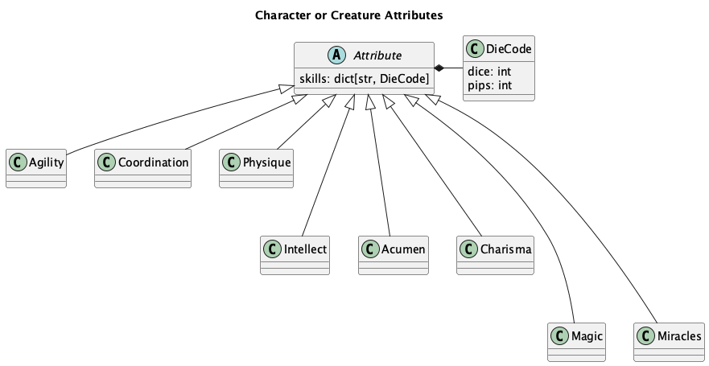
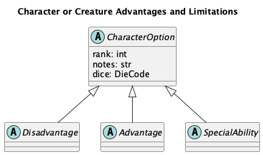
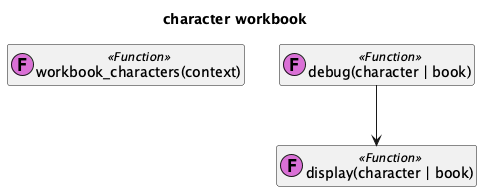

character Package¶
The opend6_tools.character module provides the DSL definitions for characters and creatures.
The module has a number of features for creating formatted displays of characters, working with creature or character definitions as command-line application, and extracting definitions from a Jupyter Lab notebook.
Here’s an illustration of the structure of this package:
![@startuml
'https://plantuml.com/component-diagram
title character package components
package opend6_tools {
component dice
package character {
component features
component output
component workbook
component monsterbook
component cli
component "~__main__"
features ..> dice
workbook ..> features
output ..> features
cli ..> features
"~__main__" ..> cli
monsterbook ..> features
monsterbook ..> workbook
}
}
package jinja2
package typer
output ..> jinja2
cli ..> typer
monsterbook ..> typer
component character_sheet
character_sheet ..> "~__main__"
@enduml](../_images/plantuml-f1627b80c9aee2d5124059a9a7ac51b3786ef018.png)
Defining Characters and Creatures¶
The opend6_tools.character module provides the definitions for the Character (and Creature) DSL.
We’ll start by looking at the overall context in which characters (or creatures) are defined.
Then we can look at the details of how the Character class is designed.
Because the make tool relies on file definitions, it helps to isolate creature and character definitions into distinct Python modules. Any of a number of organizing principles could be used for creatures, including likely environments in which they are found, or the number of dice in their budget. The top-level organization of Character and Creature modules in the context of campaign books is what a software architect might call an “aggregate root.”
Often, the characters or creatures are created interactively, using Jupyter Lab.
This means the opend6_tools.notebook_extract builds the module from the notebook.
For more information, see notebook_extract app.
The structure within the character or creature definition module is often a Python list object.
A Character is an object with a number of other Attributes and Options.
Here is the essential structure:
![@startuml
'https://plantuml.com/class-diagram
title Creature Book overview
object "list[Creature]" as book
object Creature {
name
attributes
options
}
book *-- "1..m" Creature
object Attribute {
description
dice
}
Creature *-- "6..7" Attribute
object Option {
description
dice
}
Creature *-- "0..m" Option
object "~_~_test~_~_" as test
book <.. test
object app {
display
debug
}
book <.. app
@enduml](../_images/plantuml-26a633edbf387b073202edec1f15425a5ed2c522.png)
The Character definition is almost identical to the Creature definition.
A creature can have a collection of abilities that are natural abilities. These come from the same pool as the Special Ability definitions, but don’t have an associated cost.
The Character Class¶
A Character (and a Creature) is a collection of descriptive strings.
For the purposese of computing the dice budget, there are Attribute objects and a number of distinct OptionList objects.
![@startuml
'https://plantuml.com/class-diagram
title Character or Creature class structure
class Character {
name: str
occupation: str
race: str
gender: str
age: str
height: str
weight: str
physical_description: str
agility: Agility
intellect: Intellect
coordination: Coordination
acumen: Acumen
physique: Physique
charisma: Charisma
extranormal: Magic | Miracles
advantages: OptionList
disadvantages: OptionList
special_abilities: OptionList
equipment: NoteList
armor: NoteList
weapons: NoteList
spells: NoteList
description: str
realm: str
fate_points: int
character_points: int
.. computable ..
move: int
strength_damage: DieCode
body: int
finds: DieCode
}
abstract class Attribute
Attribute <|-- Agility
Attribute <|-- Coordination
Attribute <|-- Physique
Attribute <|--- Intellect
Attribute <|--- Acumen
Attribute <|--- Charisma
Attribute <|---- Magic
Attribute <|---- Miracles
Character *-- "{6..7}" Attribute
/'Character *-- Agility
Character *-- Intellect
Character *-- Coordination
Character *-- Acumen
Character *-- Physique
Character *-- Charisma
Character *-- Magic
Character *-- Miracles
'/
class OptionList <<list[CharacterOption]>>
abstract class CharacterOption
OptionList *-- "0..m" CharacterOption
Character *-- OptionList : "advantages\ndisadvantages\nspecial_abilities"
class NoteList <<list[str]>>
Character *-- NoteList : "equipment\narmor\nweapons\nspells"
abstract class Disadvantage
CharacterOption <|-- Disadvantage
abstract class Advantage
CharacterOption <|-- Advantage
abstract class SpecialAbility
CharacterOption <|-- SpecialAbility
class Creature {
natural_abilities: OptionList
}
Character <|-- Creature
Creature -- OptionList : "natural abilities"
@enduml](../_images/plantuml-8012a4296ca1c936d550c454273d17825831b6cc.png)
A Character has a wide variety of features. The mandatory few are attributes with their associated skills. A number of values have derived default values (like body and funds). Other features are optional. And yet more features are descriptive text.
Attribute Classes¶
A Character (and most creatures) have six required Attribute values. There are three physical and three mental attributes. Optionally, some characters or creatures may have an Extranormal, attribute.
While the game play consequence of each attribute are profound, from the perspective of defining a character, they’re all essentially identical.

The attributes (and skills) have a simple, uniform
definition.
Each skill description has a name and a DieCode cost.
During game play, the skill defines how many dice are rolled
to overcome difficulties.
Any skill without a specific budget defaults to the DieCode cost of the controlling Attribute for that skill.
Options¶
Beyond the core attributes, a character or creature may have options. There are three distinct types of character options.
For creatures (and some non-human characters) an option may be identified as a “natural ability”. This small shift in terminology permits pigs to fly, by calling the special ability of flight a natural ability.

Each of these subclasses – Disadvantage, Advantage, and SpecialAbility – is the parent of a flat collection of subclasses.
The only unique feature to each subclass is the costs-per-rank of the option.
Here are the subclasses of Disadvantage:
AchillesHeel
AdvantageFlaw
Age
BadLuck
BurnOut
CulturalUnfamiliarity
Debt
Devotion
Employed
Enemy
Hindrance
Infamy
LanguageProblems
LearningProblems
Poverty
Prejudice
Price
Quirk
ReducedAttribute
Outside the Fantasy rules, this additional disadvantage is added in the unpublished Magic rules.
MinorStigma
Here are the subclasses of Advantage:
Authority
Contacts
Cultures
Equipment
Fame
Patron
Size
TrademarkSpecialization
Wealth
The Special Abilities include a class-level rank_cost value that’s not simply set to one.
Each special ability has a distinct rank cost.
Here are the subclasses of SpecialAbility:
AcceleratedHealing
Ambidextrous
AnimalControl
ArmorDefeatingAttack
AtmosphericTolerance
AttackResistance
AttributeScramble
Blur
CombatSense
Confusion
Darkness
Elasticity
Endurance
EnhancedSense
EnvironmentalResistance
ExtraBodyPart
ExtraSense
FastReactions
Fear
Flight
GliderWings
Hardiness
Hypermovement
Immortality
Immunity
IncreasedAttribute
InfravisionUltravision
Intangibility
Invisibility
IronWill
LifeDrain
Longevity
LuckGood
LuckGreat
MasterOfDisguise
MultipleAbilities
NaturalArmor
NaturalHandWeapon
NaturalMagick
NaturalRangedWeapon
Omnivorous
ParalyzingTouch
PossessionLimited
PossessionFull
QuickStudy
SenseOfDirection
Shapeshifting
Silence
SkillBonus
SkillMinimum
Teleportation
Transmutation
UncannyAptitude
Ventriloquism
WaterBreathing
YouthfulAppearance
Display and Output¶
The output features of this module perform a number of output conversions for characters and creature definitions.
![@startuml
'https://plantuml.com/class-diagram
title character output
class CharacterWriter {
base_template: str
list_template: str
dict_template: str
report(spell | book) -> str
}
class CharacterWriter_Short
CharacterWriter <|-- CharacterWriter_Short
class CharacterWriter_Long2
CharacterWriter <|-- CharacterWriter_Long2
class CharacterWriter_Table
CharacterWriter <|-- CharacterWriter_Table
class CharacterWriter_Literal
CharacterWriter <|-- CharacterWriter_Literal
class CharacterWriter_HTML
CharacterWriter <|-- CharacterWriter_HTML
class CharacterWriter_LaTeX
CharacterWriter <|-- CharacterWriter_LaTeX
class "detail(character | creature)" as detail << (F,orchid) Function >>
hide detail empty members
detail --> CharacterWriter
class "sheet(character)" as sheet << (F,orchid) Function >>
hide sheet empty members
sheet --> CharacterWriter
@enduml](../_images/plantuml-3283e5bbb09aa1631d2daa7793d465863a8d3783.png)
Plus functions summary(), detail(), sheet() And display(), debug()
Workbook Support¶
This module has a few functions for extracting characters or creatures from a Jupyter Lab Notebook.
Generally, these functions are designed to be part of a notebook, and introspect the notebook by looking at the globals() mapping.

Application Wrapper¶
This module has a few functions to build elements of a spellbook application.
These functions serve to create a CLI application using the typer library.
Generally, these are used as follows:
from opend6_tools.character import *
# Character or Creature definitions
creatures = [...]
if __name__ == "__main__":
app = build_app(creatures)
app()
This will – when run from the command line – build the application around spells (or items) defined in the module.
It will then launch the application.
This will parse command-line parameters and execute one various alternative sub-commands: test, debug, or display.
Implementation¶
OpenD6 Character and Creature Definition DSL.
There are four modules in this package:
The monsterbook module covers
opend6_tools.character.monsterbookThe cli module covers
opend6_tools.character.cliandopend6_tools.character.__main__
Generally, this is imported using from opend6_tools.character import *.
The features module¶
OpenD6 Character and Creature Features for the DSL.
Example¶
>>> from random import seed
>>> seed(42)
>>> from opend6_tools.character import *
>>> human = Character(
... occupation="Default", race="Human"
... )
>>> human.physique.dice
3*D
>>> human.extranormal.dice
0*D
>>> human.budget_check(CharacterBudget.NORMAL)
{'Attributes': '18D out of 18D', 'Skills': 'Nothing out of 7D', 'Options': 'Nothing'}
>>> human.budget
{'Attributes': 18*D, 'Skills': 0*D, 'Options': 0*D}
>>> w = CharacterWriter_Literal()
>>> print(w.report(human))
.. rubric:: OpenD6 Fantasy
+--------------------------------------------------+
| Character Name: ________________________________ |
+--------------------------------------------------+
| Occupation: Default |
+-------------------------+------------------------+
| Race: Human | Gender: ______________ |
+----------------+--------+-------+----------------+
| Age: ________ | Height: ______ | Weight: ______ |
+----------------+----------------+----------------+
| Physical Description ___________________________ |
+--------------------------------------------------+
::
+----------------------+----------------------+----------------------+
| Agility 3D | Intellect 3D | |
+----------------------+----------------------+----------------------+
| acrobatics | cultures |**Advantages**: |
| climbing | devices |**Disadvantages**: |
| combat | healing |**Special Abilities**:|
| contortion | navigation |**Equipment**: |
| dodge | reading/writing |**Description**: |
| fighting | scholar | |
| flying | speaking | |
| jumping | trading | |
| melee combat | traps | |
| riding | ____________________ | |
| stealth | ____________________ | |
| ____________________ | ____________________ | |
| ____________________ | ____________________ | |
+----------------------+----------------------+ |
| Coordination 3D | Acumen 3D | |
+----------------------+----------------------+ |
| charioteering | artist | |
| lockpicking | crafting | |
| marksmanship | disguise | |
| pilotry | gambling | |
| sleight of hand | hide | |
| throwing | investigation | |
| ____________________ | know-how | |
| ____________________ | search | |
| ____________________ | streetwise | |
| ____________________ | survival | |
| ____________________ | tracking | |
| ____________________ | ____________________ | |
| ____________________ | ____________________ | |
+----------------------+----------------------+ |
| Physique 3D | Charisma 3D | |
+----------------------+----------------------+ |
| lifting | animal handling | |
| running | bluff | |
| stamina | charm | |
| swimming | command | |
| ____________________ | intimidation | |
| ____________________ | mettle | |
| ____________________ | persuasion | |
| ____________________ | ____________________ | |
| ____________________ | ____________________ | |
| ____________________ | ____________________ | |
| ____________________ | ____________________ | |
| ____________________ | ____________________ | |
| ____________________ | ____________________ | |
+----------------------+----------------------+----------------------+
| Magic ________ | | |
+----------------------+----------------------+----------------------+
| alteration | Str Damage 2D | Body Points 28 |
| apportation | Move 10 | [ ] Stunned 17-21 |
| conjuration | Fate Pts 1 | [ ] Wounded 11-16 |
| divination | Character Pts 5 | [ ] Severe 6-10 |
| ____________________ | Funds 3D | [ ] Incapac'd 3-5 |
| ____________________ | Silver 180 | [ ] Mortal 1-2 |
| | | [ ] Dead |
+----------------------+----------------------+----------------------+
Top-Level Things¶
- class opend6_tools.character.features.Character(name: str = '', occupation: str = '', race: str = '', gender: str = '', age: str = '', height: str | None = '', weight: str | None = '', physical_description: str = '', agility: Attribute = Agility(3*D, {'acrobatics': 0*D, 'climbing': 0*D, 'contortion': 0*D, 'dodge': 0*D, 'fighting': 0*D, 'flying': 0*D, 'jumping': 0*D, 'melee combat': 0*D, 'combat': 0*D, 'riding': 0*D, 'stealth': 0*D}), intellect: Attribute = Intellect(3*D, {'cultures': 0*D, 'devices': 0*D, 'healing': 0*D, 'navigation': 0*D, 'reading/writing': 0*D, 'scholar': 0*D, 'speaking': 0*D, 'trading': 0*D, 'traps': 0*D}), coordination: Attribute = Coordination(3*D, {'charioteering': 0*D, 'lockpicking': 0*D, 'marksmanship': 0*D, 'pilotry': 0*D, 'sleight of hand': 0*D, 'throwing': 0*D}), acumen: Attribute = Acumen(3*D, {'artist': 0*D, 'crafting': 0*D, 'disguise': 0*D, 'gambling': 0*D, 'hide': 0*D, 'investigation': 0*D, 'know-how': 0*D, 'search': 0*D, 'streetwise': 0*D, 'survival': 0*D, 'tracking': 0*D}), physique: Attribute = Physique(3*D, {'lifting': 0*D, 'running': 0*D, 'stamina': 0*D, 'swimming': 0*D}), charisma: Attribute = Charisma(3*D, {'animal handling': 0*D, 'bluff': 0*D, 'charm': 0*D, 'command': 0*D, 'intimidation': 0*D, 'mettle': 0*D, 'persuasion': 0*D}), extranormal: Attribute = Magic(0*D, {'alteration': 0*D, 'apportation': 0*D, 'conjuration': 0*D, 'divination': 0*D}), advantages: OptionList | list = <factory>, disadvantages: OptionList | list = <factory>, special_abilities: OptionList | list = <factory>, description: str = '', realm: str = 'Human realm', move: int | str = 10, strength_damage: DieCode | None = None, body: int | DieCode | None = None, wounds: dict[str, str]=<factory>, funds: DieCode | None = None, silver: int | None = None, fate_points: int | None = None, character_points: int | None = None, equipment: NoteList = <factory>, armor: NoteList = <factory>, weapons: NoteList = <factory>, spells: NoteList = <factory>, personality: str = '', objectives: str = '', native_language: str = '', other_notes: str = '')[source]¶
Character definition.
Attributes have 18 dice = 54 pips Skills have 7 dice = 21 pips
- name: str = ''¶
- occupation: str = ''¶
- race: str = ''¶
- gender: str = ''¶
- age: str = ''¶
- height: str | None = ''¶
- weight: str | None = ''¶
- physical_description: str = ''¶
- agility: Attribute = Agility(3*D, {'acrobatics': 0*D, 'climbing': 0*D, 'contortion': 0*D, 'dodge': 0*D, 'fighting': 0*D, 'flying': 0*D, 'jumping': 0*D, 'melee combat': 0*D, 'combat': 0*D, 'riding': 0*D, 'stealth': 0*D})¶
- intellect: Attribute = Intellect(3*D, {'cultures': 0*D, 'devices': 0*D, 'healing': 0*D, 'navigation': 0*D, 'reading/writing': 0*D, 'scholar': 0*D, 'speaking': 0*D, 'trading': 0*D, 'traps': 0*D})¶
- coordination: Attribute = Coordination(3*D, {'charioteering': 0*D, 'lockpicking': 0*D, 'marksmanship': 0*D, 'pilotry': 0*D, 'sleight of hand': 0*D, 'throwing': 0*D})¶
- acumen: Attribute = Acumen(3*D, {'artist': 0*D, 'crafting': 0*D, 'disguise': 0*D, 'gambling': 0*D, 'hide': 0*D, 'investigation': 0*D, 'know-how': 0*D, 'search': 0*D, 'streetwise': 0*D, 'survival': 0*D, 'tracking': 0*D})¶
- physique: Attribute = Physique(3*D, {'lifting': 0*D, 'running': 0*D, 'stamina': 0*D, 'swimming': 0*D})¶
- charisma: Attribute = Charisma(3*D, {'animal handling': 0*D, 'bluff': 0*D, 'charm': 0*D, 'command': 0*D, 'intimidation': 0*D, 'mettle': 0*D, 'persuasion': 0*D})¶
- extranormal: Attribute = Magic(0*D, {'alteration': 0*D, 'apportation': 0*D, 'conjuration': 0*D, 'divination': 0*D})¶
- advantages: OptionList | list¶
- disadvantages: OptionList | list¶
- special_abilities: OptionList | list¶
- description: str = ''¶
- realm: str = 'Human realm'¶
- move: int | str = 10¶
- wounds: dict[str, str]¶
- silver: int | None = None¶
- fate_points: int | None = None¶
- character_points: int | None = None¶
- equipment: NoteList¶
type, notes; …
- armor: NoteList¶
type, AV, notes; …
- weapons: NoteList¶
type, dmg, range (S, M, L), ammo; …
- spells: NoteList¶
name, difficulty, notes; …
- personality: str = ''¶
- objectives: str = ''¶
- native_language: str = ''¶
- other_notes: str = ''¶
- budget_check(check: CharacterBudget = CharacterBudget.NO_BUDGET) dict[str, str][source]¶
- funds_roll() DieCode[source]¶
From the Character Basics rules, Funds section.
‘All characters start with a base of 3 in Funds. Use the accompanying table to adjust this number.’
- height_weight_roll(symmetric: bool = False) tuple[str, str][source]¶
Some notes…
Female characters
Mass (kg): 48 + 3 × Physique roll
Height (cm): 155 + Physique roll
Male characters
Mass (kg): 70 + 2 × Physique roll
Height (cm): 169 + Physique roll
- Parameters:
symmetric – If True, one roll is used to limit variability. If False, separate height and weight rolls are used. The default is False, no height-weight symmetry.
- Returns:
tuple of height and weight strings.
- class opend6_tools.character.features.Creature(name: str = '', occupation: str = '', race: str = '', gender: str = '', age: str = '', height: str | None = '', weight: str | None = '', physical_description: str = '', agility: opend6_tools.character.features.Attribute = Agility(3*D, {'acrobatics': 0*D, 'climbing': 0*D, 'contortion': 0*D, 'dodge': 0*D, 'fighting': 0*D, 'flying': 0*D, 'jumping': 0*D, 'melee combat': 0*D, 'combat': 0*D, 'riding': 0*D, 'stealth': 0*D}), intellect: opend6_tools.character.features.Attribute = Intellect(3*D, {'cultures': 0*D, 'devices': 0*D, 'healing': 0*D, 'navigation': 0*D, 'reading/writing': 0*D, 'scholar': 0*D, 'speaking': 0*D, 'trading': 0*D, 'traps': 0*D}), coordination: opend6_tools.character.features.Attribute = Coordination(3*D, {'charioteering': 0*D, 'lockpicking': 0*D, 'marksmanship': 0*D, 'pilotry': 0*D, 'sleight of hand': 0*D, 'throwing': 0*D}), acumen: opend6_tools.character.features.Attribute = Acumen(3*D, {'artist': 0*D, 'crafting': 0*D, 'disguise': 0*D, 'gambling': 0*D, 'hide': 0*D, 'investigation': 0*D, 'know-how': 0*D, 'search': 0*D, 'streetwise': 0*D, 'survival': 0*D, 'tracking': 0*D}), physique: opend6_tools.character.features.Attribute = Physique(3*D, {'lifting': 0*D, 'running': 0*D, 'stamina': 0*D, 'swimming': 0*D}), charisma: opend6_tools.character.features.Attribute = Charisma(3*D, {'animal handling': 0*D, 'bluff': 0*D, 'charm': 0*D, 'command': 0*D, 'intimidation': 0*D, 'mettle': 0*D, 'persuasion': 0*D}), extranormal: opend6_tools.character.features.Attribute = Magic(0*D, {'alteration': 0*D, 'apportation': 0*D, 'conjuration': 0*D, 'divination': 0*D}), advantages: opend6_tools.character.features.OptionList | list = <factory>, disadvantages: opend6_tools.character.features.OptionList | list = <factory>, special_abilities: opend6_tools.character.features.OptionList | list = <factory>, description: str = '', realm: str = 'Human realm', move: int | str = 10, strength_damage: opend6_tools.dice.DieCode | None = None, body: int | opend6_tools.dice.DieCode | None = None, wounds: dict[str, str]=<factory>, funds: opend6_tools.dice.DieCode | None = None, silver: int | None = None, fate_points: int | None = None, character_points: int | None = None, equipment: opend6_tools.character.features.NoteList = <factory>, armor: opend6_tools.character.features.NoteList = <factory>, weapons: opend6_tools.character.features.NoteList = <factory>, spells: opend6_tools.character.features.NoteList = <factory>, personality: str = '', objectives: str = '', native_language: str = '', other_notes: str = '', natural_abilities: opend6_tools.character.features.OptionList | list = <factory>, note: str = '')[source]¶
- natural_abilities: OptionList | list¶
- note: str = ''¶
- class opend6_tools.character.features.Sword(name: str = '', occupation: str = '', race: str = '', gender: str = '', age: str = '', height: str | None = '', weight: str | None = '', physical_description: str = '', agility: opend6_tools.character.features.Attribute = Agility(3*D, {'acrobatics': 0*D, 'climbing': 0*D, 'contortion': 0*D, 'dodge': 0*D, 'fighting': 0*D, 'flying': 0*D, 'jumping': 0*D, 'melee combat': 0*D, 'combat': 0*D, 'riding': 0*D, 'stealth': 0*D}), intellect: opend6_tools.character.features.Attribute = Intellect(3*D, {'cultures': 0*D, 'devices': 0*D, 'healing': 0*D, 'navigation': 0*D, 'reading/writing': 0*D, 'scholar': 0*D, 'speaking': 0*D, 'trading': 0*D, 'traps': 0*D}), coordination: opend6_tools.character.features.Attribute = Coordination(3*D, {'charioteering': 0*D, 'lockpicking': 0*D, 'marksmanship': 0*D, 'pilotry': 0*D, 'sleight of hand': 0*D, 'throwing': 0*D}), acumen: opend6_tools.character.features.Attribute = Acumen(3*D, {'artist': 0*D, 'crafting': 0*D, 'disguise': 0*D, 'gambling': 0*D, 'hide': 0*D, 'investigation': 0*D, 'know-how': 0*D, 'search': 0*D, 'streetwise': 0*D, 'survival': 0*D, 'tracking': 0*D}), physique: opend6_tools.character.features.Attribute = Physique(3*D, {'lifting': 0*D, 'running': 0*D, 'stamina': 0*D, 'swimming': 0*D}), charisma: opend6_tools.character.features.Attribute = Charisma(3*D, {'animal handling': 0*D, 'bluff': 0*D, 'charm': 0*D, 'command': 0*D, 'intimidation': 0*D, 'mettle': 0*D, 'persuasion': 0*D}), extranormal: opend6_tools.character.features.Attribute = Magic(0*D, {'alteration': 0*D, 'apportation': 0*D, 'conjuration': 0*D, 'divination': 0*D}), advantages: opend6_tools.character.features.OptionList | list = <factory>, disadvantages: opend6_tools.character.features.OptionList | list = <factory>, special_abilities: opend6_tools.character.features.OptionList | list = <factory>, description: str = '', realm: str = 'Human realm', move: int | str = 10, strength_damage: opend6_tools.dice.DieCode | None = None, body: int | opend6_tools.dice.DieCode | None = None, wounds: dict[str, str]=<factory>, funds: opend6_tools.dice.DieCode | None = None, silver: int | None = None, fate_points: int | None = None, character_points: int | None = None, equipment: opend6_tools.character.features.NoteList = <factory>, armor: opend6_tools.character.features.NoteList = <factory>, weapons: opend6_tools.character.features.NoteList = <factory>, spells: opend6_tools.character.features.NoteList = <factory>, personality: str = '', objectives: str = '', native_language: str = '', other_notes: str = '', natural_abilities: opend6_tools.character.features.OptionList | list = <factory>, note: str = '')[source]¶
- natural_abilities: OptionList | list¶
- note: str = ''¶
- class opend6_tools.character.features.OptionList(*args: CharacterOption)[source]¶
Cooperates with
pprint.pformat()to produce pretty content
Attributes¶
- class opend6_tools.character.features.Attribute(base: DieCode | None = None, skills: dict[str, DieCode | int] | None = None)[source]¶
Map any explicitly-named skills to the DieCode for that skill.
So far, the upper limit is about 12 distinct skills for an Attribute.
A skill name is either a simple word or a more complicated word:specialization.
Reserved names:
'name''dice'(for the attribute measure)'keys','values','items'from thedictclass.
For character sheets, all skills are shown, even if there’s no overriding dice allocation. (In a narrow, technical sense, the dice value for a missing skill comes from the overall attribute.) For character detail (in .RST), only the overriding skill values need to be shown.
Example
>>> from opend6_tools.character import *
>>> class Extranormal(Attribute): ... SKILL_NAMES = ("alteration", "apportation", "conjuration", "divination",) >>> ex = Extranormal(DieCode(3, 2), {"divination": DieCode(4)}) >>> ex.name 'Extranormal' >>> ex.alteration is None True >>> ex.divination is None False >>> str(ex['divination']) '4D'
- class opend6_tools.character.features.Acumen(base: DieCode | None = None, skills: dict[str, DieCode | int] | None = None)[source]¶
Bases:
AttributeThe Acumen attribute.
See CHARACTER BASICS.
Rules:
Acumen: Your character’s mental quickness, creativity, and attention to detail.
- class opend6_tools.character.features.Charisma(base: DieCode | None = None, skills: dict[str, DieCode | int] | None = None)[source]¶
Bases:
AttributeThe Charisma attribute.
See CHARACTER BASICS.
Rules:
Charisma: A gauge of emotional strength, physical attractiveness, and personality.
- class opend6_tools.character.features.Intellect(base: DieCode | None = None, skills: dict[str, DieCode | int] | None = None)[source]¶
Bases:
AttributeThe Intellect attribute.
See CHARACTER BASICS.
Rules:
Intellect: A measure of strength of memory and ability to learn.
- class opend6_tools.character.features.Agility(base: DieCode | None = None, skills: dict[str, DieCode | int] | None = None)[source]¶
Bases:
AttributeThe Agility attribute.
See CHARACTER BASICS.
Rules:
Agility: An indication of balance, limberness, quickness, and full-body motor abilities.
- class opend6_tools.character.features.Coordination(base: DieCode | None = None, skills: dict[str, DieCode | int] | None = None)[source]¶
Bases:
AttributeThe Coordination attribute.
See CHARACTER BASICS.
Rules:
Coordination: A quantification of hand-eye coordination and fine motor abilities.
- class opend6_tools.character.features.Physique(base: DieCode | None = None, skills: dict[str, DieCode | int] | None = None)[source]¶
Bases:
AttributeThe Physique attribute.
See CHARACTER BASICS.
Rules:
Physique: An estimation of physical power and ability to resist damage.
- class opend6_tools.character.features.Magic(base: DieCode | None = None, skills: dict[str, DieCode | int] | None = None)[source]¶
Bases:
AttributeThe Extranormal magic attribute.
See CHARACTER BASICS.
Rules:
Extranormal: An assessment of your character’s extraordinary abilities, which could include magic, miracles, or other extranormal talents. It is often listed by its type, rather than by the term “Extranormal.”
- class opend6_tools.character.features.Miracles(base: DieCode | None = None, skills: dict[str, DieCode | int] | None = None)[source]¶
Bases:
AttributeThe Extranormal miracles attribute.
See CHARACTER BASICS.
Rules:
Extranormal: An assessment of your character’s extraordinary abilities, which could include magic, miracles, or other extranormal talents. It is often listed by its type, rather than by the term “Extranormal.”
Options: Disadvantage¶
- class opend6_tools.character.features.Disadvantage(rank: int, notes: str = '')[source]¶
Bases:
CharacterOptionBase class of all disadvantages.
>>> disad = Disadvantage(2, "some details") >>> str(disad) 'Disadvantage (R2), some details'
- class opend6_tools.character.features.AchillesHeel(rank: int, notes: str = '')¶
Bases:
Disadvantage
- class opend6_tools.character.features.AdvantageFlaw(rank: int, notes: str = '')¶
Bases:
Disadvantage
- class opend6_tools.character.features.MinorStigma(rank: int, notes: str = '')[source]¶
Bases:
Disadvantage
- class opend6_tools.character.features.Age(rank: int, notes: str = '')¶
Bases:
Disadvantage
- class opend6_tools.character.features.BadLuck(rank: int, notes: str = '')¶
Bases:
Disadvantage
- class opend6_tools.character.features.BurnOut(rank: int, notes: str = '')¶
Bases:
Disadvantage
- class opend6_tools.character.features.CulturalUnfamiliarity(rank: int, notes: str = '')¶
Bases:
Disadvantage
- class opend6_tools.character.features.Debt(rank: int, notes: str = '')¶
Bases:
Disadvantage
- class opend6_tools.character.features.Devotion(rank: int, notes: str = '')¶
Bases:
Disadvantage
- class opend6_tools.character.features.Employed(rank: int, notes: str = '')¶
Bases:
Disadvantage
- class opend6_tools.character.features.Enemy(rank: int, notes: str = '')¶
Bases:
Disadvantage
- class opend6_tools.character.features.Hindrance(rank: int, notes: str = '')¶
Bases:
Disadvantage
- class opend6_tools.character.features.Infamy(rank: int, notes: str = '')¶
Bases:
Disadvantage
- class opend6_tools.character.features.LanguageProblems(rank: int, notes: str = '')¶
Bases:
Disadvantage
- class opend6_tools.character.features.LearningProblems(rank: int, notes: str = '')¶
Bases:
Disadvantage
- class opend6_tools.character.features.Poverty(rank: int, notes: str = '')¶
Bases:
Disadvantage
- class opend6_tools.character.features.Prejudice(rank: int, notes: str = '')¶
Bases:
Disadvantage
- class opend6_tools.character.features.Price(rank: int, notes: str = '')¶
Bases:
Disadvantage
- class opend6_tools.character.features.Quirk(rank: int, notes: str = '')¶
Bases:
Disadvantage
- class opend6_tools.character.features.ReducedAttribute(rank: int, notes: str = '')¶
Bases:
Disadvantage
Options: Advantage¶
- class opend6_tools.character.features.Advantage(rank: int, notes: str = '')[source]¶
Bases:
CharacterOptionBase class of all advantages.
Options: Special Ability¶
- class opend6_tools.character.features.SpecialAbility(rank: int, notes: str = '')[source]¶
Bases:
CharacterOptionBase class of all Special Abilities.
- class opend6_tools.character.features.AcceleratedHealing(rank: int, notes: str = '')¶
Bases:
SpecialAbility
- class opend6_tools.character.features.Ambidextrous(rank: int, notes: str = '')¶
Bases:
SpecialAbility
- class opend6_tools.character.features.AnimalControl(rank: int, notes: str = '')¶
Bases:
SpecialAbility
- class opend6_tools.character.features.ArmorDefeatingAttack(rank: int, notes: str = '')¶
Bases:
SpecialAbility
- class opend6_tools.character.features.AtmosphericTolerance(rank: int, notes: str = '')¶
Bases:
SpecialAbility
- class opend6_tools.character.features.AttackResistance(rank: int, notes: str = '')¶
Bases:
SpecialAbility
- class opend6_tools.character.features.AttributeScramble(rank: int, notes: str = '')¶
Bases:
SpecialAbility
- class opend6_tools.character.features.Blur(rank: int, notes: str = '')¶
Bases:
SpecialAbility
- class opend6_tools.character.features.CombatSense(rank: int, notes: str = '')¶
Bases:
SpecialAbility
- class opend6_tools.character.features.Confusion(rank: int, notes: str = '')¶
Bases:
SpecialAbility
- class opend6_tools.character.features.Darkness(rank: int, notes: str = '')¶
Bases:
SpecialAbility
- class opend6_tools.character.features.Elasticity(rank: int, notes: str = '')¶
Bases:
SpecialAbility
- class opend6_tools.character.features.Endurance(rank: int, notes: str = '')¶
Bases:
SpecialAbility
- class opend6_tools.character.features.EnhancedSense(rank: int, notes: str = '')¶
Bases:
SpecialAbility
- class opend6_tools.character.features.EnvironmentalResistance(rank: int, notes: str = '')¶
Bases:
SpecialAbility
- class opend6_tools.character.features.ExtraBodyPart(rank: int, notes: str = '')¶
Bases:
SpecialAbility
- class opend6_tools.character.features.ExtraSense(rank: int, notes: str = '')¶
Bases:
SpecialAbility
- class opend6_tools.character.features.FastReactions(rank: int, notes: str = '')¶
Bases:
SpecialAbility
- class opend6_tools.character.features.Fear(rank: int, notes: str = '')¶
Bases:
SpecialAbility
- class opend6_tools.character.features.Flight(rank: int, notes: str = '')¶
Bases:
SpecialAbility
- class opend6_tools.character.features.GliderWings(rank: int, notes: str = '')¶
Bases:
SpecialAbility
- class opend6_tools.character.features.Hardiness(rank: int, notes: str = '')¶
Bases:
SpecialAbility
- class opend6_tools.character.features.Hypermovement(rank: int, notes: str = '')¶
Bases:
SpecialAbility
- class opend6_tools.character.features.Immortality(rank: int, notes: str = '')¶
Bases:
SpecialAbility
- class opend6_tools.character.features.Immunity(rank: int, notes: str = '')¶
Bases:
SpecialAbility
- class opend6_tools.character.features.IncreasedAttribute(rank: int, notes: str = '')¶
Bases:
SpecialAbility
- class opend6_tools.character.features.InfravisionUltravision(rank: int, notes: str = '')¶
Bases:
SpecialAbility
- class opend6_tools.character.features.Intangibility(rank: int, notes: str = '')¶
Bases:
SpecialAbility
- class opend6_tools.character.features.Invisibility(rank: int, notes: str = '')¶
Bases:
SpecialAbility
- class opend6_tools.character.features.IronWill(rank: int, notes: str = '')¶
Bases:
SpecialAbility
- class opend6_tools.character.features.LifeDrain(rank: int, notes: str = '')¶
Bases:
SpecialAbility
- class opend6_tools.character.features.Longevity(rank: int, notes: str = '')¶
Bases:
SpecialAbility
- class opend6_tools.character.features.LuckGood(rank: int, notes: str = '')¶
Bases:
SpecialAbility
- class opend6_tools.character.features.LuckGreat(rank: int, notes: str = '')¶
Bases:
SpecialAbility
- class opend6_tools.character.features.MasterOfDisguise(rank: int, notes: str = '')¶
Bases:
SpecialAbility
- class opend6_tools.character.features.MultipleAbilities(rank: int, notes: str = '')¶
Bases:
SpecialAbility
- class opend6_tools.character.features.NaturalArmor(rank: int, notes: str = '')¶
Bases:
SpecialAbility
- class opend6_tools.character.features.NaturalHandWeapon(rank: int, notes: str = '')[source]¶
Bases:
NaturalHandToHandWeapon
- class opend6_tools.character.features.NaturalMagick(rank: int, notes: str = '')¶
Bases:
SpecialAbility
- class opend6_tools.character.features.NaturalRangedWeapon(rank: int, notes: str = '')¶
Bases:
SpecialAbility
- class opend6_tools.character.features.Omnivorous(rank: int, notes: str = '')¶
Bases:
SpecialAbility
- class opend6_tools.character.features.ParalyzingTouch(rank: int, notes: str = '')¶
Bases:
SpecialAbility
- class opend6_tools.character.features.PossessionLimited(rank: int, notes: str = '')¶
Bases:
SpecialAbility
- class opend6_tools.character.features.PossessionFull(rank: int, notes: str = '')¶
Bases:
SpecialAbility
- class opend6_tools.character.features.QuickStudy(rank: int, notes: str = '')¶
Bases:
SpecialAbility
- class opend6_tools.character.features.SenseOfDirection(rank: int, notes: str = '')¶
Bases:
SpecialAbility
- class opend6_tools.character.features.Shapeshifting(rank: int, notes: str = '')¶
Bases:
SpecialAbility
- class opend6_tools.character.features.Silence(rank: int, notes: str = '')¶
Bases:
SpecialAbility
- class opend6_tools.character.features.SkillBonus(rank: int, notes: str = '')¶
Bases:
SpecialAbility
- class opend6_tools.character.features.SkillMinimum(rank: int, notes: str = '')¶
Bases:
SpecialAbility
- class opend6_tools.character.features.Teleportation(rank: int, notes: str = '')¶
Bases:
SpecialAbility
- class opend6_tools.character.features.Transmutation(rank: int, notes: str = '')¶
Bases:
SpecialAbility
- class opend6_tools.character.features.UncannyAptitude(rank: int, notes: str = '')¶
Bases:
SpecialAbility
- class opend6_tools.character.features.Ventriloquism(rank: int, notes: str = '')¶
Bases:
SpecialAbility
- class opend6_tools.character.features.WaterBreathing(rank: int, notes: str = '')¶
Bases:
SpecialAbility
- class opend6_tools.character.features.YouthfulAppearance(rank: int, notes: str = '')¶
Bases:
SpecialAbility
The output module¶
OpenD6 Character and Creature DSL. Output functions and classes.
These are the conventional top-level application components.
The display() function produces the useful RST output.
A character extract application can produce character sheets in a variety of formats:
RST for use with Sphinx to produce HTML websites, books, and player handouts. RST can be converted via rst2html into HTML. Custom CSS styles can make the HTML more useful. Alternative, RST can be converted via rst2latex into LaTex.
Stripped-down HTML (with carefully-designed CSS styles) that can be used by tools like xhtml2pdf to produce PDF player handouts.
LaTeX that can be used by tools like pdflatex to produce PDF player handouts.
The HTML can be converted to PDF to create Player handouts.
RST output¶
- class opend6_tools.character.output.CharacterWriter[source]¶
Report a character for publication.
Default is long form with table-formatted identity block as a header.
- static col_3(character: Character, *, equipment: bool = True, description: bool = True, markup: str = 'rst') list[str][source]¶
For some displays, the third column is a mix of various things. It does not trivially align with other attributes and skills in the first two columns.
This is extracted from the character details, and cached within the character to slightly optimize the way the content is generated. The output template can then laminate rows of these rows with rows from other collections of skills.
- Parameters:
character – The Character instance from which to gather details.
equipment – True to include equipment
markup – Either “rst” or “html” for markup to use.
- static if_none(value: Any, otherwise: str) str[source]¶
A function that can be installed in Jinja to replace None values with a string.
- Parameters:
value – value to include in a template
otherwise – value to include if
valueisNoneor an empty string
- Returns:
value or otherwise
- class opend6_tools.character.output.CharacterWriter_Short[source]¶
Short-form – no identity block header.
- class opend6_tools.character.output.CharacterWriter_Long2[source]¶
Long-form – Base with no identity block header.
HTML Output¶
LaTex Output¶
High-Level Output API¶
- opend6_tools.character.output.detail(character: Character | list[Character] | CharacterDict, form: Format = Format.TABLE) None[source]¶
A character sheet, formatted for publication, using one of the defined formats.
The HTML formats can be run through xhtml2pdf to create PDF files.
- Parameters:
character – The Character (or list or dictionary of characters) or Creature.
form – The format to use.
PDF Conversion¶
There are some alternative HTML to PDF conversion tool candidates:
https://pypi.org/project/xhtml2pdf/. This installs an easy-to-use application,
xhtml2pdf x.html x.pdf. It requiresbrew install pkg-config cairoon MacOS.https://pypi.org/project/fpdf2/ This does not read the CSS from the HTML source, but requires it separately, making the templates slightly more complicated.
WeasyPrint (too complicated to install.)
Supported CSS styles by xhtml2pdf:
background-color border-bottom-color, border-bottom-style, border-bottom-width border-left-color, border-left-style, border-left-width border-right-color, border-right-style, border-right-width border-top-color, border-top-style, border-top-width colordisplay font-family, font-size, font-style, font-weight height line-height, list-style-type margin-bottom, margin-left, margin-right, margin-top padding-bottom, padding-left, padding-right, padding-top page-break-after, page-break-before size text-align, text-decoration, text-indent vertical-align white-space width zoom
The following properties can also be set true in a style
-pdf-frame-border -pdf-frame-break -pdf-frame-content -pdf-keep-with-next -pdf-next-page -pdf-outline -pdf-outline-level -pdf-outline-open -pdf-page-break
The workbook module¶
OpenD6 Character and Creature Definition DSL. Some handy workbook functions.
- opend6_tools.character.workbook.workbook_characters(context: dict[str, Any]) dict[str, Character][source]¶
Emit sequence of Characters in a Workbook.
- Parameters:
context – Usually
globals()for a Notebook- Returns:
dict mapping from
Charactername toCharacterinstances
- opend6_tools.character.workbook.workbook_groupBy(context: dict[str, ~typing.Any], group_rule: ~collections.abc.Callable[[~opend6_tools.character.features.Character], str] = <function <lambda>>) dict[str, list[Character]][source]¶
Transform a dict[name: str, Character] of spells into a dictionary: dict[some_attr: str, list[Character]]. This is often used to partition by realm, but any other string attribute is possible.
- Parameters:
context – Usually
globals()for a Notebook- Returns:
dict mapping from rank number to lists of
Spellinstances
- opend6_tools.character.workbook.display(character: Character, check: CharacterBudget | bool = CharacterBudget.NORMAL) str[source]¶
Creates a display a character in plain text to help designers.
- opend6_tools.character.workbook.debug(characters: list[Character | Creature] | CharacterDict, ident: int | str | None | list[str] = None) None[source]¶
Prints details of a Character to STDOUT. Uses
display().>>> from opend6_tools.character import * >>> human = Character( ... occupation="Default", race="Human" ... ) >>> book = [human] >>> debug(book, 0) ## {'name': '', 'occupation': 'Default', 'race': 'Human', 'gender': '', 'age': '', 'height': '', 'weight': '', 'physical_description': '', 'agility': Agility(3*D, {'acrobatics': 0*D, 'climbing': 0*D, 'contortion': 0*D, 'dodge': 0*D, 'fighting': 0*D, 'flying': 0*D, 'jumping': 0*D, 'melee combat': 0*D, 'combat': 0*D, 'riding': 0*D, 'stealth': 0*D}), 'intellect': Intellect(3*D, {'cultures': 0*D, 'devices': 0*D, 'healing': 0*D, 'navigation': 0*D, 'reading/writing': 0*D, 'scholar': 0*D, 'speaking': 0*D, 'trading': 0*D, 'traps': 0*D}), 'coordination': Coordination(3*D, {'charioteering': 0*D, 'lockpicking': 0*D, 'marksmanship': 0*D, 'pilotry': 0*D, 'sleight of hand': 0*D, 'throwing': 0*D}), 'acumen': Acumen(3*D, {'artist': 0*D, 'crafting': 0*D, 'disguise': 0*D, 'gambling': 0*D, 'hide': 0*D, 'investigation': 0*D, 'know-how': 0*D, 'search': 0*D, 'streetwise': 0*D, 'survival': 0*D, 'tracking': 0*D}), 'physique': Physique(3*D, {'lifting': 0*D, 'running': 0*D, 'stamina': 0*D, 'swimming': 0*D}), 'charisma': Charisma(3*D, {'animal handling': 0*D, 'bluff': 0*D, 'charm': 0*D, 'command': 0*D, 'intimidation': 0*D, 'mettle': 0*D, 'persuasion': 0*D}), 'extranormal': Magic(0*D, {'alteration': 0*D, 'apportation': 0*D, 'conjuration': 0*D, 'divination': 0*D}), 'advantages': OptionList(), 'disadvantages': OptionList(), 'special_abilities': OptionList(), 'description': '', 'realm': 'Human realm', 'move': 10, 'strength_damage': 2*D, 'body': 31, 'wounds': {'Mortal': '1-2', 'Incapacitated': '3-5', 'Severe': '6-11', 'Wounded': '12-18', 'Stunned': '19-24'}, 'funds': 3*D, 'silver': 180, 'fate_points': 1, 'character_points': 5, 'equipment': NoteList(), 'armor': NoteList(), 'weapons': NoteList(), 'spells': NoteList(), 'personality': '', 'objectives': '', 'native_language': '', 'other_notes': '', 'Check': {'Attributes': '18D out of 18D', 'Skills': 'Nothing out of 7D', 'Options': 'Nothing'}}
- Parameters:
spells – Spell Book
ident – Identifier for a spell, a number, or a name, or a list of names. Shell-style wild-cards are used to match names.
The monsterbook module¶
This creates a Python Module with creature or character definitions. The module will be a CLI application with a number of subcommands.
python creature_module.py displaywill display the spells in RST format. This is used by the publication process.python creature_module.py debug 'name'will write debugging output for a spell.
- opend6_tools.character.monsterbook.build_app(book: dict[str, Character | Creature], book_attr_name: str = 'characters', *, rich_markup_mode: Literal['rich', 'markdown'] | None = 'rich') Typer[source]¶
- opend6_tools.character.monsterbook.make_character_doctest(character_book: dict[str, Character | Creature], book_attr_name: str = 'characters', budget: CharacterBudget = CharacterBudget.NO_BUDGET) None[source]¶
Given a book of Characters or Creatures, write a
__test__definition, suitable for doctest.- Parameters:
character_book – The book with a list of characters or creatures.
book_attr_name – The attribute name for the book.
budget – A CharacterBudget against which to test the character or creature.
- opend6_tools.character.monsterbook.parse_param_name(all_characters: CharacterDict, arg_value: str) str | None[source]¶
Given a dictionary with names and characters, find the closest match to a given arg_value.
- Parameters:
all_characters – A dictionary with names and Characters.
arg_value – A command-line argument value.
- Returns:
closest matching key from the dictionary.
The cli module¶
Main app to make a blank character sheet.
- opend6_tools.character.cli.main(format: ~typing.Annotated[~typing.Literal['LONG', 'LONG2', 'SHORT', 'TABLE', 'LITERAL', 'HTML', 'PLAYER', 'LATEX'], <typer.models.OptionInfo object at 0x1095547d0>] = 'TABLE') None[source]¶
Produce a blank character sheet.
The __main__ module¶
The __main__ module is a visible entry-point, creating an app from the character package.